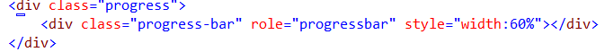

Bootstrap进度条：Bootstrap 进度条使用 CSS3 过渡和动画来获得该效果。Internet Explorer 9 及之前的版本和旧版的 Firefox 不支持该特性，Opera 12 不支持动画。
默认的进度条:创建滚动条
添加一个带有.progress类 的 div
接着，在上面的div内，添加一个带有.progress-bar类的空的div
在.progress-bar类的div中，添加一个带有百分比表示的宽度的 style 属性，例如 style="width:60%"; 表示进度条在 60% 的位置

交替滚动条:
添加一个带有.progress类的div
接着，在上面的 div 内，添加一个带有 .progress-bar类 和 progress-bar-*类的空的div。其中，* 可以是 success、info、warning、danger。
添加一个带有百分比表示的宽度的 style 属性，例如 style="width:60%"; 表示进度条在 60% 的位置。
动态的进度条：在类progress里面多添加一个progress-striped类
添加一个带有.progress progress-striped类的div，同时添加类active
接着，在上面的 div 内，添加一个带有 .progress-bar类 和 progress-bar-*类的空的div。其中，* 可以是 success、info、warning、danger。
添加一个带有百分比表示的宽度的 style 属性，例如 style="width:60%"; 表示进度条在 60% 的位置。
堆叠的滚动条:把多个进度条放在相同的 .progress 中即可实现堆叠
添加一个带有.progress类的div
接着，在上面的 div 内，添加一个带有 .progress-bar类 和 progress-bar-*类的空的div。其中，* 可以是 success、info、warning、danger。
添加一个带有百分比表示的宽度的 style 属性，例如 style="width:60%"; 表示进度条在 60% 的位置。